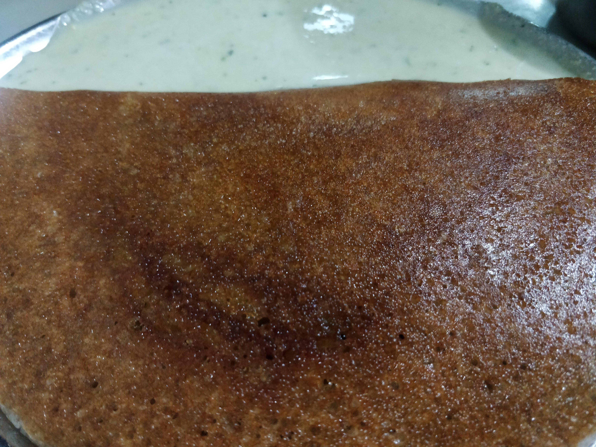

Started in 1943 as a small canteen to cater to the needs of students of the nearby National High School and Acharya Pathshala, this dose canteen is an integral part of Bengaluru history. Keeping alive tradition, their dose are supposedly unchanged through the course of these 76 years. They have built a strong, devoted base of customers who regularly eat a meal here, maybe as part of a routine or maybe as part of a ritual.
On Friday, the 15th day of August, 1947, Vidyarthi Bhavan declared a holiday commemorating the Independence of India from British Rule. Since then, they have remained closed on Fridays to celebrate the same.
The Dose
As soon as we were seated, we were asked for our orders apart from their famous masala dose, which they assumed no customer would go away without eating. Perfect. We ordered rave vade, khara bath and coffee. A banquet by all means. As we restlessly waited for our dose to arrive with a waiter who carried about 15 dose at once, we were served the other dishes. They had great flavour and left us craving for more.
Our eyes lit up as we saw a waiter carrying multiple dose approaching us, balancing them with precautious skill and dishing them out rapidly. This was my first time here and I was going to be an infinitesimal part of their history. The dose was a beautiful brownish gold and was served with a white coconut chutney that had subtle flavours. It had a thin crispy layer and was filled with a spiced masala. The dose batter was incredibly tasty and was fit to be eaten just as. The accompanying coffee was packed with rich flavour.
 A perfect golden brown colour contrasting the white chutney.Dose and History
The atmosphere of this place is noteworthy. It was swarming with people and there was a long waiting time. I was told this was the usual. Once inside, this humble canteen gave out a very homely vibe. The walls had various sketches with descriptions in Kannada and the vintage look of the place was carefully preserved. You felt the history of this place running through the walls. You felt the tradition, as if vaporized, in the atmosphere. It was unexplainable. This elevated the dose we so meekly ate, sitting on a shared table, taking it all in.
It’s fascinating how perfection in traditional recipes and the unchanged palate of Vidyarthi Bhavan devotees forms a perfect symbiosis. All because of an unassuming dose? This is how an eatery attains the legendary status. It’s no fib that a happy tummy results in a happy mind.